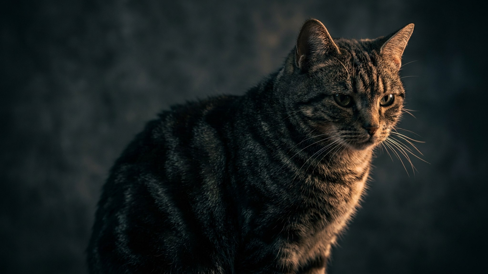

Американская короткошёрстная: почему легко полнеет и как удержать вес

3 июля 2026 · 3 минуты чтения · Породы кошек
Американская короткошёрстная — крепкая, спокойная и невероятно неприхотливая кошка. Ровно эти достоинства делают её чемпионом по незаметному набору веса: ест хорошо, двигается умеренно, а хозяин замечает лишнее, когда кошка уже «раздалась». Ниже — почему порода в группе риска, как поймать проблему на ранней стадии и удержать форму без диет-стресса.
🐾 Первая помощь — всегда под рукой
AnimaLife подскажет, что делать в тревожной ситуации с питомцем ещё до визита к врачу. Откройте в один тап.
Открыть AnimaLife → Открыть в MAX →
Почему именно эта порода в группе риска
- Плотное, мускулистое сложение — лишний вес визуально «прячется» под шубкой.
- Спокойный, покладистый темперамент: кошка охотно лежит рядом, а не носится по квартире.
- Отличный аппетит и любовь к еде — легко переедает при постоянно полной миске.
- После стерилизации обмен замедляется, а аппетит растёт — двойной удар по фигуре.
Как заметить лишнее дома
Ориентир — не цифра на весах, а телосложение. Что стоит проверить на глаз и на ощупь:
- Рёбра прощупываются легко, без нажатия, но наружу не выпирают — это норма.
- Сверху за рёбрами видна «талия», сбоку — небольшой подтянутый живот.
- Появился отвисающий живот-«фартук», рёбра не нащупать — повод пересмотреть рацион.
- Кошка стала меньше играть и тяжелее запрыгивать — лишний вес уже мешает.
Взвешивайте кошку дома раз в месяц (встаньте на весы с ней и без неё, вычтите разницу) и записывайте результат. Так вы поймаете плавную прибавку, которую глазом не видно: набор на 10–15% — уже сигнал скорректировать порции. Причину набора и целевой вес лучше обсудить с ветеринаром.
Порции и режим
- Считайте норму на «идеальный», а не текущий вес — отправная точка на упаковке корма, дальше корректируйте по форме.
- Дробите суточную норму на 3–4 приёма — меньше выпрашивания и ровнее аппетит.
- Уберите «миску всегда полной»: свободный доступ — главная причина переедания у породы.
- Лакомства — не больше 10% дневных калорий, и вычитайте их из основной порции.
- Влажный корм в помощь: больше объёма и воды при меньшей калорийности.
Движение и быт
- Две игровые сессии по 10–15 минут в день: удочка, мячик, финальная «добыча», чтобы кошка выложилась.
- Кормушки-головоломки и разбрасывание корма по квартире превращают еду в охоту.
- Вертикальные маршруты — полки, комплекс, — чтобы кошка лазала, а не только лежала.
- Договоритесь всей семьёй: спокойную кошку легко «залюбить» лакомствами до лишнего веса.
🐾 Экономьте на лишних визитах к врачу
Сначала спросите AI-ветеринара в AnimaLife — часто этого достаточно, чтобы понять, нужен ли визит к врачу.
Спросить бесплатно → Спросить в MAX →
🐾 Понравился разбор?
Подпишитесь на канал — каждый день разбираем по одному тревожному симптому у кошек и собак: что в пределах нормы, а когда пора к врачу. Подпишитесь, чтобы не пропустить разбор, который может спасти здоровье вашего питомца.
Американская короткошёрстная живёт 15–20 лет, и стройность — половина этого долголетия: меньше нагрузки на суставы, сердце и обмен. Держите форму привычками, а не жёсткими диетами — и порода отблагодарит здоровьем.
Материал носит информационный характер и не заменяет очную консультацию ветеринара.
← Все статьи · Открыть AnimaLife в Telegram · RSS